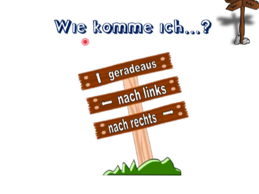
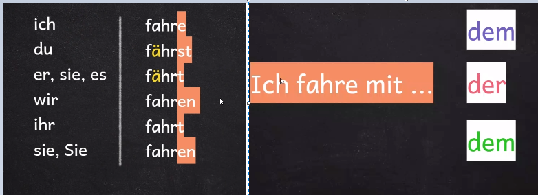
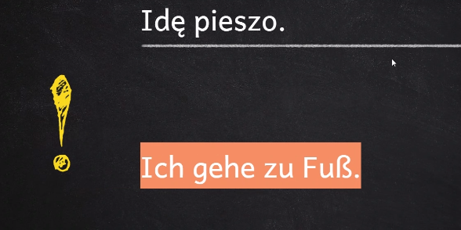

Wie Komme Ich?...
Womit fahrst du? | Czym jedziesz?
Link do prezentacji

Opis Własnego Wyglądu
Ich trage ein Hemd, ein T-shirt, eine Jeans,ein Sweatshirt und eine brille.
Das Hemd ist rot und das ist elegant
Das T-Shirt ist grau und das ist billig
Das Sweatshirt ist schwarz und das ist gut
Die Jeans ist blau und die ist neu
Die Brille ist dunkelblau und die ist stylish
-------------------------------------------------------------------------------------------------------------------------------------------------------------------------------------------------------------------------------------------------------------------
Budowa czasu perfekt
Link do budowy czasu-------------------------------------------------------------------------------------------------------------------------------------------------------------------------------------------------------------------------------------------------------------------
Przyimki opisujące miejsce
an - przyauf - na
hinter -za
in- w
neben - obok
uber - nad
unter - pod
vor- przed
zwischen - między
-------------------------------------------------------------------------------------------------------------------------------------------------------------------------------------------------------------------------------------------------------------------
Słówka + Tłumaczenie
Jechać - fahren - gefahren (s.)Iść - gehen - gegangen (s.)
przychodzić, pochodzić - kommen - gekommen (s.)
jeść - essen - gegessen
pić - trinken - getrunken
mówić - sprechen - gesprochen
pisać - schreiben - geschrieben
czytać - lesen - gelesen
widzieć - sehen - gesehen
stać - stehen - gestanden
wstawać - aufstehen - aufgestanden (s.)
spać - schlafen - geschlafen
zasypiać - einschlafen - eingeschlafen (s.)
spotykać - treffen - getroffen
ciągnąć - ziehen - gezogen
znaleźć - finden - gefunden
pomagać - helfen - geholfen
leżeć - liegen - gelegen
siedzieć - sitzen - gesessen
dawać - geben - gegeben
brać, wziąć - nehmen - genommen
nosić - tragen - getragen
być - sein - gewesen (s.)
zostawać - bleiben - geblieben (s.)
stać się, zostać - werden - geworden (s.)
Kto jest nieobecny? / Kogo nie ma? - Wer ist heute nicht da? / Wer fehlt heute?
Kto jest nieprzygotowany? - Wer ist heute nicht vorbereitet?
Zapisz / Zapiszcie temat. - Schreib / Schreibt das Thema auf.
Pisz / Piszcie. - Schreib / Schreibt.
Otwórzcie podręczniki / zeszyty ćwiczeń na stronie … . - Öffnet die Lehrbücher / die Arbeitsbücher auf Seite … .
Zamknijcie podręczniki / zeszyty ćwiczeń. - Macht die Lehrbücher / die Arbeitsbücher zu.
Dalej. / Ty jesteś następny! - Weiter! / Du bist dran!
Podejdź do tablicy (multimedialnej). - Komm an die (interaktive) Tafel.
Mów / Mówcie po niemiecku. - Sprich / Sprecht auf Deutsch.
Przeczytaj / Przeczytajcie. - Lies / Lest.
Słuchaj / Słuchajcie. - Hör / Hört zu.
Uzupełnij / Uzupełnijcie. - Ergänze / Ergänzt.
Pokaż / Pokażcie. - Zeig / Zeigt.
Pracuj z kolegą / koleżanką. - Arbeite mit deinem Partner / deiner Partnerin.
Pytaj / Pytajcie. - Frag / Fragt.
Odpowiedz / Odpowiedzcie. - Antworte / Antwortet.
Przyporządkuj / Przyporządkujcie. - Ordne / Ordnet zu.
Kto wie? - Wer weiß?
Jestem obecny. - Ich bin da! / Hier.
Nieobecny. / … jest dziś nieobecny. - Nicht da! / … ist heute nicht da.
Jestem dziś nieprzygotowany. - Ich bin heute nicht vorbereitet.
Nie mam pracy domowej. - Ich habe keine Hausaufgabe.
Która strona? - Welche Seite?
Jakie zadanie? - Welche Aufgabe?
Nie rozumiem. - Ich verstehe nicht.
Nie wiem. - Ich weiß nicht.
Co znaczy … ? - Was bedeutet … ?
Jak mówi się … po niemiecku? - Wie sagt man … auf Deutsch?
Jak to się pisze? - Wie schreibt man das?
Jak to się wymawia? - Wie spricht man das aus?
Słucham? / Proszę powtórzyć. - Wie bitte? / Wiederholen Sie bitte!
Proszę mi pomóc! - Helfen Sie mir!
Czy mogę wyjść do toalety? -Darf ich auf die Toilette gehen?
Dlaczego - warum
Ponieważ - denn, weil
Jestem smutny. - Ich bin traurig
. Jestem szczęśliwy. - Ich bin glücklich.
przeprowadzać się - umziehen
wychodzić za mąż, żenić się - heiraten
znaleźć pracę - einen Job finden
pracodawca, pracodawcy - der Arbeitgeber, die Arbeitgeber
poznawać - kennenlernen
rozpakować - auspacken
dzwonić, telefonować - anrufen
zaczynać - anfangen
wsiadać - einsteigen
wysiadać - aussteigen
przesiadać się - umsteigen
wstawać - aufstehen
zasypiać - einschlafen
przybywać, przyjeżdżać - ankommen
najpierw - zuerst
potem, następnie - dann
później - später
na końcu - schließlich
Co się stało? - Was ist passiert?
Czegoś takiego jeszcze nie przeżyłeś/-aś! - So was hast du noch nicht erlebt!
Nie uwierzysz. - Du glaubst es nicht!
Zrozumiałem/-am. - Ich hab's verstanden.
Spóźniłem/-am się na autobus. - Ich habe den Bus verpasst.
Zapomniałem/-am kluczy. - Ich habe den Schlüssel vergessen.
Zgubiłem/-am portfel. - Ich habe meine Geldbörse verloren.
Co za pech! - So ein Pech!
-------------------------------------------------------------------------------------------------------------------------------------------------------------------------------------------------------------------------------------------------------------------
Rezerwoać- reservieren
w cenie- inklusive
bezpłatny - kostenlos
Korzystna cena- G:Unstriger Peris
pokój jednoosobowy- das Einzelzimmer
pokój dwuosobowy- das Doppelzimmer
pokój trzyosobowy- das Dreibettzimmer
W czym mogę pani/panu pomóc? - Kann ich Ihnen helfen?
Czy życzy Pan / Pani sobie pełne czy niepełne wyżywienie?-Möchten Sie Vollpension oder Halbpension?
Potrzebuję Pana / Pani dowodu osobistego - Ich brauche Ihre Ausweise
wypełnić formularz - das Formular ausfüllen
wymeldować się - auschecken
-------------------------------------------------------------------------------------------------------------------------------------------------------------------------------------------------------------------------------------------------------------------
mieć pozwolenie - dürfen
prawo jazdy- der Führerschein
złożyć wniosek-beantragen
wyłączać - ausmachen
telefon komórkowy - das Handy
papieros(mniam) - die Zigarette
palić papierosy - rauchen
jechać wolno - langsam fahren
szukać parkingu - einen Parkplatz suchen
parkować - parken
-------------------------------------------------------------------------------------------------------------------------------------------------------------------------------------------------------------------------------------------------------------------
kupować bilet- eine Fahrkarte kaufen
Automat biletowy działa. / nie działa.-Automat biletowy działa. / nie działa.
płacić- bezahlen
wybrać cel- das Ziel wählen
zabrać resztę- das Wechselgeld nehmen
skasować bilet-die Fahrkarte stempeln
najpierw, na początku-zuerst
potem, następnie- dann, danach
na koniec-zum Schluss
-------------------------------------------------------------------------------------------------------------------------------------------------------------------------------------------------------------------------------------------------------------------
Przeczytałem/-am ogłoszenie. - Ich habe Ihre Anzeige gelesen.
Czy to miejsce jest jeszcze wolne?- Ist die Stelle noch frei?
Jak długo trwa praktyka? - Jak długo trwa praktyka?
Jaki jest czas pracy? - Wie ist die Arbeitszeit?
Czy otrzymam wynagrodzenie za praktykę? - Bekomme ich für das Praktikum auch Geld?
Szukamy praktykantki / praktykanta. - Wir suchen eine Praktikantin / einen Praktikanten.
Szukamy praktykantki / praktykanta.
Wir suchen eine Praktikantin / einen Praktikanten.
Proszę przesłać mailem list motywacyjny na adres ... . - Schicken Sie Ihre Bewerbung bitte per E-Mail an ... .
-------------------------------------------------------------------------------------------------------------------------------------------------------------------------------------------------------------------------------------------------------------------
Kiedy się urodziłeś? - Wann bist du geboren?
Od kiedy uczysz się niemieckiego? - Od kiedy uczysz się niemieckiego?
Jak długo uczysz się niemieckiego?- Wie lange lernst du Deutsch?
kształcić się - die Ausbildung machen
odbyć praktykę- ein Praktikum machen
Szanowny Panie- Sehr geehrter Herr,
Szanowna Pani - Sehr geehrte Frau,
Z serdecznymi pozdrowieniami (na końcu listu) - Mit freundlichen Grüßen
trwać - dauern
przed miesiącem - vor einem Monat
od miesiąca - seit einem Monat
przed tygodniem - vor einer Woche
od tygodnia-seit einer Woche
przed rokiem - vor einem Jahr
od roku- seit einem Jahr
przed dwoma tygodniami - vor zwei Wochen
od dwóch tygodni - seit zwei Wochen
Schritte 2 / Kapitel 8 A
dozorca, dozorczyni - der Hausmeister, die Hausmeisterin
policjant, policjantka - der Polizist, die Polizistin
dziennikarz, dziennikarka - der Journalist, die Journalistin
inżynier, pani inżynier - der Ingenieur, die Ingenieurin
lekarz, lekarka - der Arzt, die Ärztin
kucharz, kucharka - der Koch, die Köchin
kobieta zajmująca się domem - die Hausfrau
pielęgniarz, pielęgniarka - der Krankenpfleger, die Krankenschwester
Kim jesteś z zawodu? /
Kim jest Pan/Pani z zawodu?-
Was bist du von Beruf? / Was sind Sie von Beruf
pracować jako... w... - arbeiten als... bei...
On jest uczniem. - Er ist Schüler.
Ona jest uczennicą. - Sie ist Schülerin
On / Ona prowadzi własną działalność. - Er / Sie ist selbstständig.
On / Ona nie pracuje teraz. - Er / Sie arbeitet jetzt nicht.
On / Ona jest aktualnie bezrobotny /-a. - Er / Sie ist zurzeit arbeitslos.
-------------------------------------------------------------------------------------------------------------------------------------------------------------------------------------------------------------------------------------------------------------------
dozorca, dozorczyni - der Hausmeister, die Hausmeisterin
policjant, policjantka - der Polizist, die Polizistin
dziennikarz, dziennikarka - der Journalist, die Journalistin
inżynier, pani inżynier - der Ingenieur, die Ingenieurin
lekarz, lekarka - der Arzt, die Ärztin
kucharz, kucharka - der Koch, die Köchin
kobieta zajmująca się domem - die Hausfrau
pielęgniarz, pielęgniarka - der Krankenpfleger, die Krankenschwester
Kim jesteś z zawodu? /
Kim jest Pan/Pani z zawodu?-
Was bist du von Beruf? / Was sind Sie von Beruf
pracować jako... w... - arbeiten als... bei...
On jest uczniem. - Er ist Schüler.
Ona jest uczennicą. - Sie ist Schülerin
On / Ona prowadzi własną działalność. - Er / Sie ist selbstständig.
On / Ona nie pracuje teraz. - Er / Sie arbeitet jetzt nicht.
On / Ona jest aktualnie bezrobotny /-a. - Er / Sie ist zurzeit arbeitslos.
-------------------------------------------------------------------------------------------------------------------------------------------------------------------------------------------------------------------------------------------------------------------
einsteigen - wsiadać
aussteigen - wysiadać
umsteigen - przesiadać się
-------------------------------------------------------------------------------------------------------------------------------------------------------------------------------------------------------------------------------------------------------------------
die notaufnahme- izba przyjęć
der Arzt - doktor
der wartebereich- poczekalnia
die schmerztablette - środek przeciwbólowy
das Bein - noga
das ohr - ucho
der Arm - ramię
der Finger- palec
der Kopf - głowa
die nase - nos
Der mund - Usta
Kehle - gardło
schmerzen- ból
-------------------------------------------------------------------------------------------------------------------------------------------------------------------------------------------------------------------------------------------------------------------
Der betraff - temat
der absender - nadawca
die- Postleizahl - kod pocztowy
die- Hausnummer - numer domu
der Ort - miejsce
die straße - ulica
der empfänger - odbiorca
der Bruß- powitanie
die Anrede - pozdrowienie
die Datum - data
die (Auto-)Werkstatt - (garaż)warsztat
das auto - Marka samochodu
der Autoschlussel - kluczyki do auta
die Apotheke - Apteka
das Navi - nawigacja
die S-bahn - kolej miejska
die autobahn - Autostrada
die Tankstelle - stacja paliw
das Eis - loud
die Brucke - most
die Ampel - Sygnalizacja świetlna
Fahren Sie nach rechts - Jedź w prawo
Fahren Sie nach links - Jedź w lewo
Fahren Sie nach geradeaus - Jzgereedż prosto
Metzgerei - mięsny
Bahnof - stacja kolejowa
Bäckerei - Piekarnia
Bücherei - Biblioteka
buchhandlung - Księgarnia
der konferenzraum - sala konferencyjna
die Werkstatt - warsztat
die apotheke - Apteka
die Praxis - Praktyki
der Hausmeister - woźny
der Schweiz - Szwajcaria
-------------------------------------------------------------------------------------------------------------------------------------------------------------------------------------------------------------------------------------------------------------------